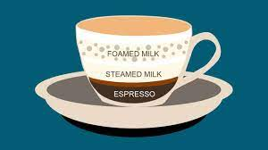
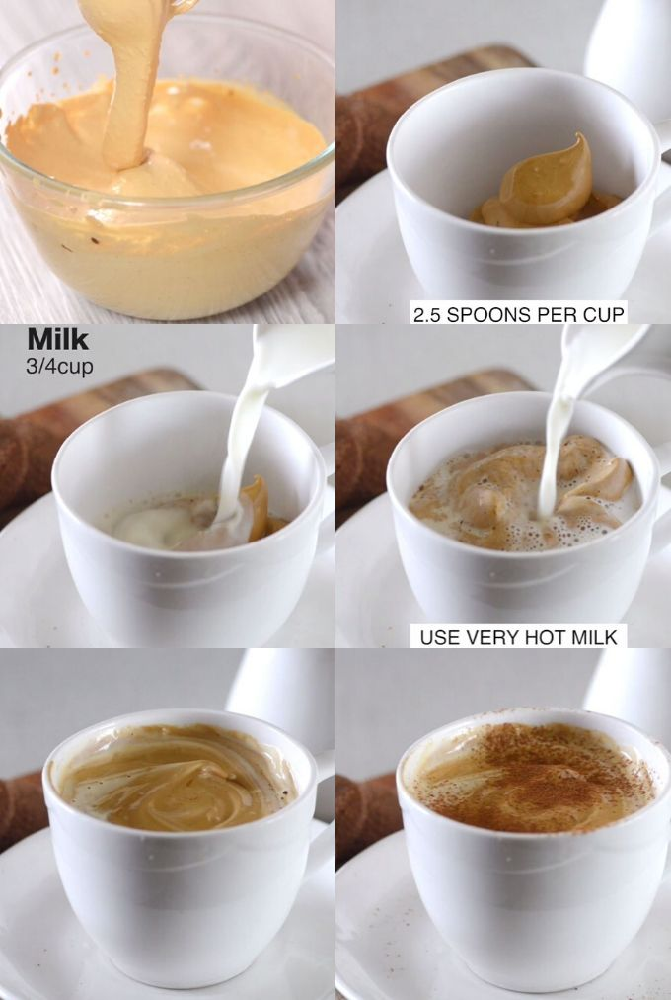

CAPPUCCINO

Its hooded histroy
The Cappuccino is believed to have been first invented in Italy in the early 1900s,
with the first recorded referencing being cited as appearing in the 1930s.
However, its etymology goes even further back and comes from the word ‘cappuccio’.
One of the first uses of this term is in the first part of Dante’s Divine Comedy, Inferno, and was used by the poet to describe a group of reformist friars who opted to cover themselves from head-to-toe in brown fabric.
It is from this that the word cappuccino originates as the espresso is served ‘cloaked’ in milk.
Though an Italian word, there is enough evidence around to suggest that the Germans adopted and then adapted it. In 1790, there is a recorded example of a 'Capuzinerkaffee', a type of coffee where the espresso is mixed with cream, sugar and spice before being poured over an egg.
However, by the 20th Century, the contracted Kapuziner simply meant a coffee with a little bit of milk.
What we would refer to as a cappuccino today truly took off in popularity after World War II and the simple drink of espresso and
foamed milk has gone on to become a permanent fixture on the menu boards of coffee shops all over the world.
Key Ingredients
- Espresso
- Steamed Milk
- Foamed Milk
Equipment
- Coffee machine with steam arm/wand
- Milk jug
- Thermometer
A Quick Guide
-

- Foam and texture the required quantity of milk - Remember! We want more foam than steamed milk
- Brew a single or double espresso (as per taste or order) directly into your serving cup
- Gently swirl the milk to release any large air bubbles - tap the milk jug against a counter to remove any stubborn bubbles
- Pour the milk over the espresso from a low height for a smooth drink
- Finish by giving the milk a slight 'wiggle' to ensure foam transfers from milk jug to the cup to top off your Cappuccino
A truly traditional coffee experience

Paul Meikle-Janney, a former leading judge for the World Latte Art Championships,
demonstrates the techniques required to make the perfect Cappuccino time after time.
Start off by texturing the milk.
As a rule of thumb we suggest you only 1/3 fill the milk jug.
This is because there needs to be enough milk present to be able to instigate the correct foaming motion,
but, on the other hand, too much and the contents are likely to overflow once the milk begins to expand.
Give the steam wand a quick purge, place the tip just underneath the surface of the milk and then turn the steam arm on.
A sucking and ‘chirping’ noise should be noticeable as air the hot air gets drawn into the milk.
As the milk begins to heat up gradually lower the wand and position it so that it is close to the jug’s side.
This subtle movement will begin to spin the milk, layering it in the process.
Turn the steam arm off before the milk gets too hot and begins to spoil, purge the arm and place the milk to one side,
giving the base of the jug a gentle tap to remove any large bubbles
Now it is time to turn your attention to the espresso. Whilst the espresso is pouring,
lightly swirl the milk in order to force some liquid around.
This is done because we want the resulting milk to be tightly compacted with a smooth, glossy finish.
To get the foam for the cappuccino, give the milk jug a final quick spin before pouring it from a low height to the cup with a slight wiggle.
As the foam begins to form move the jug slightly higher and begin to pour through.